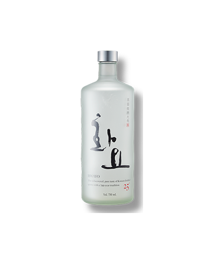
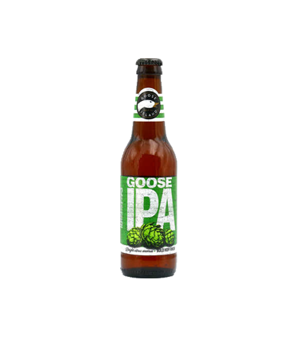
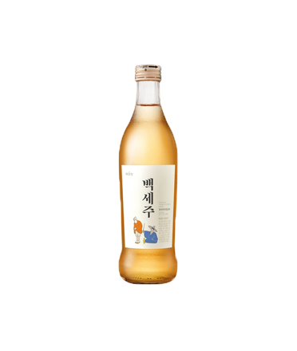

Let's Drink BEST 10
-
BEST 1
애플마티니
상큼한 초록색과 새콤달콤한 맛
보드카 마티니에서 베르무트 대신 사과 쥬스나 애플 슈냅스를 사용한 칵테일.
어떤 레시피를 사용해도 25도가 넘는 독한 칵테일이지만, 특유의 예쁜 초록색과 새콤달콤한 맛으로 인기를 끌었고 미국 전역에 퍼진다.
애플마티니를 처음 시도한 롤라의 레스토랑에서는 술취해 쓰러진 여성들이 너무 많아져서 메뉴에서 제외한 적도 있을 정도.
판매 중지는 6개월 정도 이어졌는데, 애플마티니를 원하는 사람들의 원성이 너무 많아서 다시 판매하기 시작했다고 한다. -

BEST 2
화요토닉
레몬으로 상큼함을 더한 짜릿한 맛
火堯. 한국의 증류식 소주의 하나.
화요라는 이름은 소주의 소(燒)를 파자한 것이다.
향이 강하지 않아 증류식 소주를 처음 마셔보아 향에 익숙하지 않은 사람이 마시기에 적당한 술이다.
레몬과 토닉워터를 가미해 만든 화요토닉은 술을 잘 마시지 못하는 사람도 음료수처럼 즐길 수 있을 만큼 부드럽다.
여성들이 좋아하는 대중적인 한국 술. -

BEST 3
참이슬
설명할 필요없는 술 중의 술
기존 진로소주의 알코올도수를 낮춰 1998년에 판매를 시작한 하이트진로의 대표 소주 브랜드.
희석식 소주 중 판매량 1위이며 서울과 수도권, 호남지역(특히 전북) 소주이다.
오리지널은 제법 도수가 강하고 독한데 청년층은 그다지 선호하지 않지만 중장년층과 노년층에게 인기가 많다.
자타 공인 대한민국 대표 술이며, 어느 안주와 어느 장소에든 어울리는 만인의 술. -

BEST 4
청하
부드러운 목넘김에 술이 술술술
다른 청주, 전통주가 한약재나 기타 과실 열매를 넣는 데 비해 청하는 순수하게 쌀로만 담근다.
맛은 시큼달달한 편이며 반주용으로 적당하다.
맛이 부드럽고 옅어 자극적인 안주보다는 회 같은 날음식과 잘 어울린다.
일본 정통 사케와 비교하긴 힘들지만 저렴한 가격에 순하게 취할 수 있다. -

BEST 5
구스IPA
살짝쿵 쓴 맛을 느끼고 싶은 날
구스 아일랜드 브루어리에서 양조되는 맥주. 처음에는 동네의 작은 펍에서 시작되었으나, 펍의 인기가 높아지며 양조장을 설립하였다.
IPA란 India Pale Ale의 약자이며, 페일 에일에 다량의 홉을 넣어 만든 맥주이다.
알코올 도수가 높고, 강한 쓴맛과 아로마를 가지고 있다. -

BEST 6
느린마을막걸리
막걸리처럼 느리더라도 나만의 맛을 가지기
국순당의 대표막걸리로 젊은 층에 인기를 끌고 있다.
아스파탐을 넣지 않은 막걸리이다.
심심하고 담백하다는 느낌을 받지만 물, 쌀, 밀, 누룩, 효모 외에는 첨가된 것이 없어서 자극적인 잡내가 없다.
누구든 부담 없이 먹을 수 있다. -
BEST 7
생맥주
살얼음 가득한 맥주는 날 떨리게 해
보리를 가공한 맥아를 주재료로 발효시키고 여기에 향신료인 홉(hop)을 첨가하여 맛을 낸 술이다.
생맥주는 상대적으로 빠른 회전율로 소비되는 경향이 있어 일반적으로 병, 캔 맥주에 비해 짧은 유통 기간을 누려 훨씬 신선하고, 변질로부터 자유롭다.
캔맥주나 병맥주와는 다르게 탄산가스를 주입하여 도출하기 때문에 비교적 더 풍부한 탄산감을 느낄수도 있다.
크림 생맥주는 맥주에 질소를 충전하거나, 초음파를 통과시켜 크림처럼 조밀한 거품이 나오도록 만들어진 맥주이다. -

BEST 8
매화수
달콤한 주스를 마시고 싶을 때
매실주 원액과 스페인산 화이트 와인을 혼합한 것에 주정을 넣어 도수를 14%로 유지하여 제조된다.
이 때문에 희석식 소주와 다른 '과실주'로 분류되어 있다.
매실주의 새콤달콤한 맛을 강조한 것이 특징이다.
달고 목넘김이 좋기 때문에 많이 마시게 되어 앉은뱅이 술에 속하기도 한다. -

BEST 9
고량주
뒤끝없는 깔끔함에 향기로움까지
고량주는 백주의 일종으로, 수수를 주원료로 사용하여 만든 중국의 증류주다.
일반적으로 도수가 높으면 50~60도, 낮으면 30~40도 내외로 강한 편이다.
부드럽고 깔끔한 맛과 은은한 과일향이 특징이다.
고량주는 증류주로 중국 술 중에서도 상당히 독한 편이다.
높은 도수와 입 안을 씻어내리는 듯한 깔끔한 뒷맛 때문에 향이 강하고 기름기가 많은 중국 음식과 매우 잘 어울린다. -

BEST 10
백세주
건강하게 오래오래 술마시자
1992년부터 국순당에서 주조하는 청주이다.
"백세주"라는 명칭은 조선 중기의 학자인 이수광의 《지봉유설》에 전하는 "구기백세주" 설화에서 따온 것이다.
주세법상 약주로 분류되며 대중적으로 가장 잘 알려진 한국식 청주라고 할 수 있다.
술 자체에 한약재가 들어가 특유의 향취가 무척 강하고 달작지근한 약재를 넣었기 때문에 단맛도 강한 편이다.